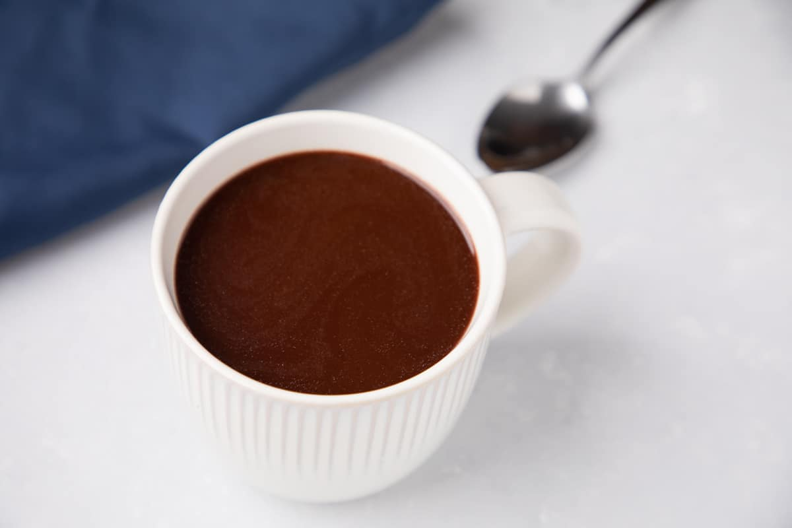

Hot Choco - A Filipino Sikwate Recipe

Hot choco or Sikwate is by its name suggests a hearty drink of dark chocolate. This drinks soothes the soul with its rich, flavorful, and natural chocolate goodness, which is perfect for rainy days and cold weather.
Ingridients
- Tablea or Cocoa
- Water
- Sugar
Additional Ingridients
Equipment
Steps
- Boil water, the amount depends on the tablea you use. 1 tablea is usually for 2 cups
- If water is on a boil, lower the heat and add the desired amount of tablea.
- Cook for around 5 minutes or more while stirring so the tablea doesn't burn.
- Pour and serve it in a mug
- Add sugar, milk, or other compatible ingridients to your cup to taste.